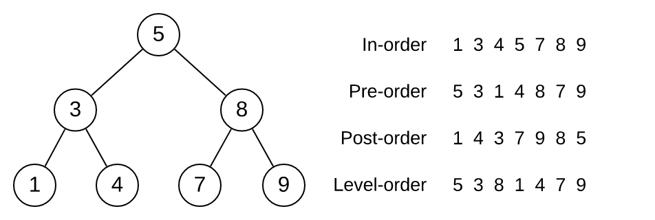

Week 04 Tutorial Questions
ADTs, Binary Search Trees
ADTs
-
A classic problem in computer science is the problem of implementing a queue using two stacks. Consider the following stack ADT interface:
// Creates a new empty stack Stack StackNew(void); // Pushes an item onto the stack void StackPush(Stack s, int item); // Pops an item from the stack and returns it // Assumes that the stack is not empty int StackPop(Stack s); // Returns the number of items on the stack int StackSize(Stack s);
Use the stack ADT interface to complete the implementation of the queue ADT below:
#include "Stack.h" struct queue { Stack s1; Stack s2; }; Queue QueueNew(void) { Queue q = malloc(sizeof(struct queue)); q->s1 = StackNew(); q->s2 = StackNew(); return q; } void QueueEnqueue(Queue q, int item) { // TODO } int QueueDequeue(Queue q) { // TODO }
Binary Search Trees
For the questions below, use the following data type:
struct node {
int value;
struct node *left;
struct node *right;
};
-
(Binary Search Trees)
For each of the sequences below
- start from an initially empty binary search tree
- show the tree resulting from inserting values in the order given
- 4 6 5 2 1 3 7
- 5 2 3 4 6 1 7
- 7 6 5 4 3 2 1
Assume new values are always inserted as new leaf nodes.
-
(Binary Search Trees)
Consider the following tree and its values displayed in different output orderings:
What kind of trees have the property that their in-order traversal is the same as their pre-order traversal?
Are there any kinds of trees for which all output orders will be the same?
-
(Binary Search Trees)
Implement the following function that counts the number of odd values in a tree. Use the following function interface:
int bstCountOdds(struct node *t) { ... }
-
(Binary Search Trees)
Implement the following function to count number of internal nodes in a given tree. An internal node is a node with at least one child node. Use the following function interface:
int bstCountInternal(struct node *t) { ... }
-
(Binary Search Trees)
Implement the following function that returns the level of the node containing a given key if such a node exists, otherwise the function returns -1 (when a given key is not in the binary search tree). The level of the root node is zero. Use the following function interface:
int bstNodeLevel(struct node *t, int key) { ... }
-
(Binary Search Trees)
Implement the following function that counts the number of values that are greater than a given value. This function should avoid visiting nodes that it doesn't have to visit. Use the following function interface:
int bstCountGreater(struct node *t, int val) { ... }